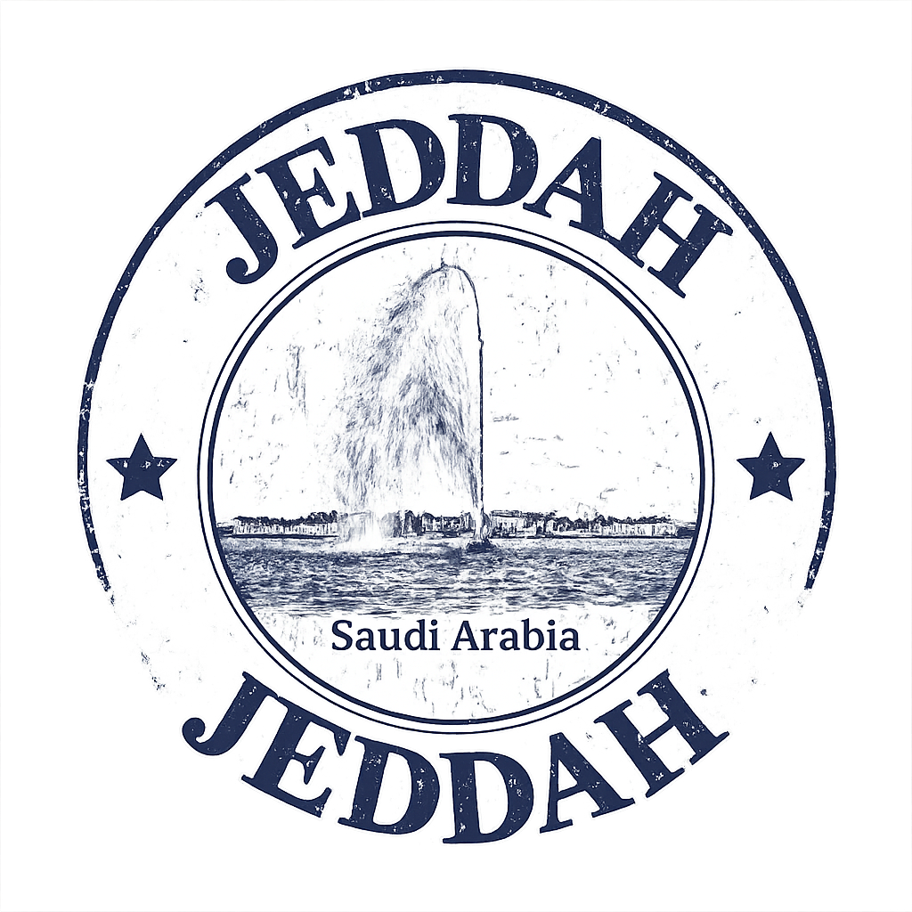

Held in the vibrant coastal city of Jeddah, the season features live concerts, international shows, sporting events, cultural performances, and family-friendly activities across multiple zones. Visitors can enjoy exciting amusement parks, interactive entertainment experiences, fireworks displays, art exhibitions, and waterfront events along the Red Sea coast. The festival also highlights local Saudi culture through traditional music, food, and heritage activities, while offering modern attractions such as gaming events, shopping festivals, and international dining experiences. With its lively atmosphere and diverse entertainment options, Jeddah Season has become one of the most popular tourism events in Saudi Arabia.
For more information click here.